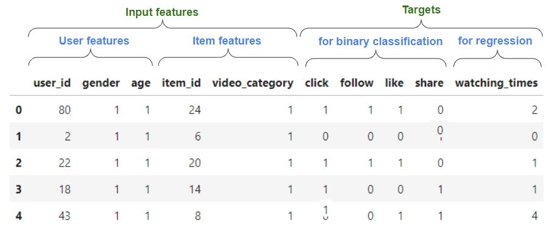

Quick-start for ranking models with Merlin#
Do you want to get the best possible accuracy for your ranking problem? This guide will teach you best practices on preprocessing data, training and hypertuning ranking models with Merlin.
We iterate in this guide over a typical Data Science process which involves data preprocessing / feature engineering, model training and evaluation and hyperparameter tuning.

We use as example here the TenRec dataset, which is large (140 million positive interactions from 5 million users), contains explicit negative feedback (items exposed to the user and not interacted) and multiple target columns (click, like, share, follow).
Setup#
You can run these scripts either using the latest Merlin TensorFlow image or installing the necessary Merlin libraries according to their documentation (core, NVTabular, dataloader, models).
In this doc we provide the commands for setting up a Docker container for Merlin TensorFlow, as it provides all necessary libraries already installed.
Download the TenRec dataset#
You can find the TenRec dataset in this link. You might switch the page language to English in the top-right link, if you prefer.
To be able to download the data, you need first to agree with the terms an register your e-mail. After downloading the zipped file (4.2 GB) you just need to uncompress the data.
Preparing the data#
The TenRec dataset contains a number of CSV files. We will be using the QK-video.csv, which logs user interactions with different videos.
Here is an example on how the data looks like. For ranking models, you typically have user, item and contextual features and one or more targets, that can be a binary (e.g. has the customer clicked or liked and item) or regression target (e.g. watch times).

As QK-video.csv has a reasonable size (~15 GB with ~493 million examples), feel free to reduce it for less rows you want to test the pipeline more quickly or if you don’t have a powerful GPU available (V100 with 32 GB or better). For example, with the following command you can truncate the file keeping the first 10 million rows (header line included).
head -n 10000001 QK-video.csv > QK-video-10M.csv
Start Docker container#
Pull the latest Merlin TensorFlow image.
docker pull nvcr.io/nvidia/merlin/merlin-tensorflow:latest
Set
INPUT_DATA_PATHvariable to the folder whereQK-video.csvwas saved.
TheOUTPUT_PATHis the place where the preprocessed dataset and trained model will be saved.
INPUT_DATA_PATH=/path/to/input/dataset/
OUTPUT_PATH=/path/to/output/path/
Start a Merlin TensorFlow container in interactive mode
docker run --gpus all --rm -it --ipc=host -v $INPUT_DATA_PATH:/data -v $OUTPUT_PATH:/outputs \
nvcr.io/nvidia/merlin/merlin-tensorflow:latest /bin/bash
Inside the container, go to
/Merlin/examples/quick_startfolder and install the Quick-start dependencies.
cd /Merlin/examples/quick_start
pip install -r requirements.txt
Preprocessing#
In order to make it easy getting the data ready for model training, we provide a generic script: preprocessing.py. That script is based on dask_cudf and NVTabular libraries that leverage GPUs for accelerated and distributed preprocessing.
P.s. NVTabular also supports CPU which is suitable for prototyping in dev environments.
The preprocessing script outputs preprocessed data as a number of parquet files, as well as a schema that stores output features metadata like statistics and tags.
In this example, we set some options for preprocessing. Here is the explanation of the main arguments; you can check the full documentation and best practices for preprocessing.
--categorical_features- Names of the categorical/discrete features (concatenated with “,” without space).--binary_classif_targets- Names of the available target columns for binary classification task--regression_targets- Names of the available target columns for regression task--user_id_feature- Name of the user id feature--item_id_feature- Name of the item id feature--to_int32,--to_int16,--to_int8- Allows type casting the columns to the lower possible precision, which may avoid memory issues with large datasets.--dataset_split_strategy- Strategy for splitting train and eval sets. In this case,random_by_useris chosen, which means that train and test will have the same users with some random examples reserved for evaluation.--random_split_eval_perc- Percentage of data to reserve for eval set--filter_query- A filter query condition compatible with dask-cudfDataFrame.query(). In this example, we keep only examples were all targets are 0 or where click=1, to remove examples where we have other targets equals to 1, but click = 0.--min_item_freq,--min_user_freq,max_user_freq- Filters out training examples from users or items based on their min or max frequency threshold
For larger dataset (like the full TenRec dataset), in particular when using filtering options that require dask_cudf filtering (e.g. --filter_query, --min_item_freq) we recommend using the following options to avoid out-of-memory errors:
--enable_dask_cuda_cluster- Initializes a dask-cudfLocalCUDAClusterfor managed single or multi-GPU preprocessing--persist_intermediate_files- Persists/caches to disk intermediate files during preprocessing (in paricular after filtering).
cd /Merlin/examples/quick_start/scripts/preproc/
OUT_DATASET_PATH=/outputs/dataset
python preprocessing.py --input_data_format=csv --csv_na_values=\\N --data_path /data/QK-video.csv --filter_query="click==1 or (click==0 and follow==0 and like==0 and share==0)" --min_item_freq=30 --min_user_freq=30 --max_user_freq=150 --num_max_rounds_filtering=5 --enable_dask_cuda_cluster --persist_intermediate_files --output_path=$OUT_DATASET_PATH --categorical_features=user_id,item_id,video_category,gender,age --binary_classif_targets=click,follow,like,share --regression_targets=watching_times --to_int32=user_id,item_id --to_int16=watching_times --to_int8=gender,age,video_category,click,follow,like,share --user_id_feature=user_id --item_id_feature=item_id --dataset_split_strategy=random_by_user --random_split_eval_perc=0.2
After you execute this script, a folder dataset will be created in --output_path with the preprocessed datasets , with train and eval folders. You will find a number of partitioned parquet files inside those dataset folders, as well as a schema.pbtxt file produced by NVTabular which is very important for automated model building in the next step.
Training a ranking model#
Merlin Models is a Merlin library that makes it easy to build and train RecSys models. It is built on top of TensorFlow, and provides building blocks for creating input layers based on the features in the schema, different feature interaction layers and output layers based on the target columns defined in the schema.
A number of popular ranking models are available in Merlin Models API like DLRM, DCN-v2, Wide&Deep, DeepFM. This Quick-start provides a generic ranking script ranking.py for building and training those models using Models API.
In the following command example, you can easily train the popular DLRM model which performs 2nd level feature interaction. It sets --model dlrm and --embeddings_dim 64 because DLRM models require all categorical columns to be embedded with the same dimension for the feature interaction. You notice that we can set many of the common model (e.g. top --mlp_layers) and training hyperparameters like learning rate (--lr) and its decay (--lr_decay_rate, --lr_decay_steps), L2 regularization (--l2_reg, embeddings_l2_reg), --dropout among others. We set --epochs 1 and --train_steps_per_epoch 10 to train for just 10 batches and make runtime faster. If you have a GPU with more memory (e.g. V100 with 32 GB), you might increase --train_batch_size and --eval_batch_size to a much larger batch size, for example to 65536.
There are many target columns available in the dataset, and you can select one of them for training by setting --tasks=click. In this dataset, there are about 3.7 negative examples (click=0) for each positive example (click=1). That leads to some class unbalance. We can deal with that by setting --stl_positive_class_weight to give more weight to the loss for positive examples, which are rarer.
cd /Merlin/examples/quick_start/scripts/ranking/
OUT_DATASET_PATH=/outputs/dataset
CUDA_VISIBLE_DEVICES=0 TF_GPU_ALLOCATOR=cuda_malloc_async python ranking.py --train_data_path $OUT_DATASET_PATH/train --eval_data_path $OUT_DATASET_PATH/eval --output_path ./outputs/ --tasks=click --stl_positive_class_weight 3 --model dlrm --embeddings_dim 64 --l2_reg 1e-4 --embeddings_l2_reg 1e-6 --dropout 0.05 --mlp_layers 64,32 --lr 1e-4 --lr_decay_rate 0.99 --lr_decay_steps 100 --train_batch_size 65536 --eval_batch_size 65536 --epochs 1 --train_steps_per_epoch 10
You can explore the full documentation and best practices for ranking models, which contains details about the command line arguments.
Training a ranking model with multi-task learning#
When multiple targets are available for the same features, models typically benefit from joint training a single model with multiple heads / losses. Merlin Models supports some architectures designed specifically for multi-task learning based on experts. You can find an example notebook with detailed explanations here.
The ranking.py script makes it easy to train ranking models with multi-task learning by setting more than one target, e.g. --tasks="click,like,follow,share").
Training an MMOE model#
In the following example, we use the popular MMOE (--model mmoe) architecture for multi-task learning. It creates independent expert sub-networks (as defined by --mmoe_num_mlp_experts, --expert_mlp_layers) that interacts independently the input features. Each task has a gate with --gate_dim that averages the expert outputs based on learned softmax weights, so that each task can harvest relevant information for its predictions. Each task might also have an independent tower by setting --tower_layers.
You can also balance the loss weights by setting --mtl_loss_weight_* arguments and the tasks positive class weight by setting --mtl_pos_class_weight_*.
cd /Merlin/examples/quick_start/scripts/ranking/
CUDA_VISIBLE_DEVICES=0 TF_GPU_ALLOCATOR=cuda_malloc_async python ranking.py --train_data_path $OUT_DATASET_PATH/train --eval_data_path $OUT_DATASET_PATH/eval --output_path ./outputs/ --tasks=click,like,follow,share --model mmoe --mmoe_num_mlp_experts 3 --expert_mlp_layers 128 --gate_dim 32 --use_task_towers=True --tower_layers 64 --embedding_sizes_multiplier 4 --l2_reg 1e-5 --embeddings_l2_reg 1e-6 --dropout 0.05 --lr 1e-4 --lr_decay_rate 0.99 --lr_decay_steps 100 --train_batch_size 65536 --eval_batch_size 65536 --epochs 1 --mtl_pos_class_weight_click=1 --mtl_pos_class_weight_like=2 --mtl_pos_class_weight_share=3 --mtl_pos_class_weight_follow=4 --mtl_loss_weight_click=3 --mtl_loss_weight_like=3 --mtl_loss_weight_follow=1 --mtl_loss_weight_share=1 --train_steps_per_epoch 10
You can find more quick-start information on multi-task learning and MMOE architecture here.
Hyperparameter tuning#
We provide a tutorial on how to do hyperparameter tuning with Merlin models and Weights&Biases Sweeps.
We also make it available a benchmark resulted from our own hyperparameter tuning of TenRec dataset. It compares the different single-task and multi-task learning models. It provides also empirical information on what were the improvements obtained with hyperparameter tuning, the curated hypertuning search space for modeling hyperparameters of ranking.py and the most important hyperparameters.
Model Deployment on Triton Inference Server#
In the model deployment step, we deploy NVTabular workflow, and the trained and saved ranking model(s) on Triton Inference Server. The inference.py script makes it easy to export model configuration files and the required artifacts to deploy the models on Triton. Moreover, we provide an example notebook to demonstrate how to prepare a batch raw request to sent Triton and receive a response from it. You can find more information about inference step and the scripts here.